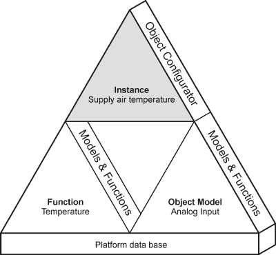
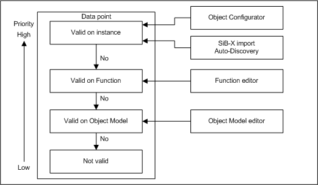
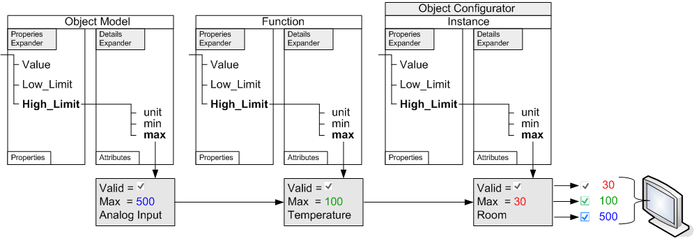
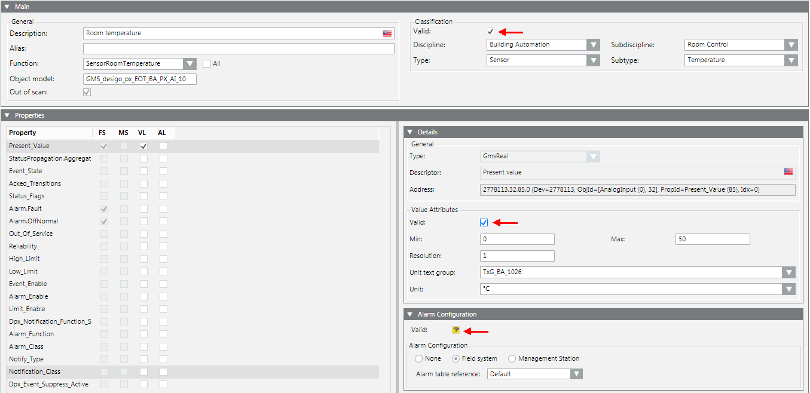

Concept
The figure below provides an overview on the interaction of object model, function, and instances, and the associated editors.

Data Inheritance
The Object Configurator supplies detailed information on a selected object. Attributes may also be edited depending on object type. The check box refers to the applicable data source. Data is inherited per the following priority rules:

The figure below indicates the validity of the information:
- If Valid is set for an instance
 (gray check), the information has a higher priority than the information for the functions or the object model.
(gray check), the information has a higher priority than the information for the functions or the object model. - If Valid is cleared, the information from the function
 (green check) or from the object model
(green check) or from the object model  (blue check) is inherited and evaluated.
(blue check) is inherited and evaluated.

Data validity for a data point instance:

The color of the check boxes indicates the origin of the data values.
Inheritance Rules for Object Model, Function, and Object | ||
Icon | Color | Description |
| White | No value is inherited. |
| Grey | The project instance value is inherited. |
| Green | The Function inherits the value. |
| Blue | The Object Model inherits the value. |
| Question mark with a yellow background. | The value is undefined until the instance is saved. |


While you change inheritance properties, you cannot disable an inheritance. As a result, the state changes from to or when editing. This display for the inheritance function is used for the Main, Properties, Details, and Alarm Configuration expander.